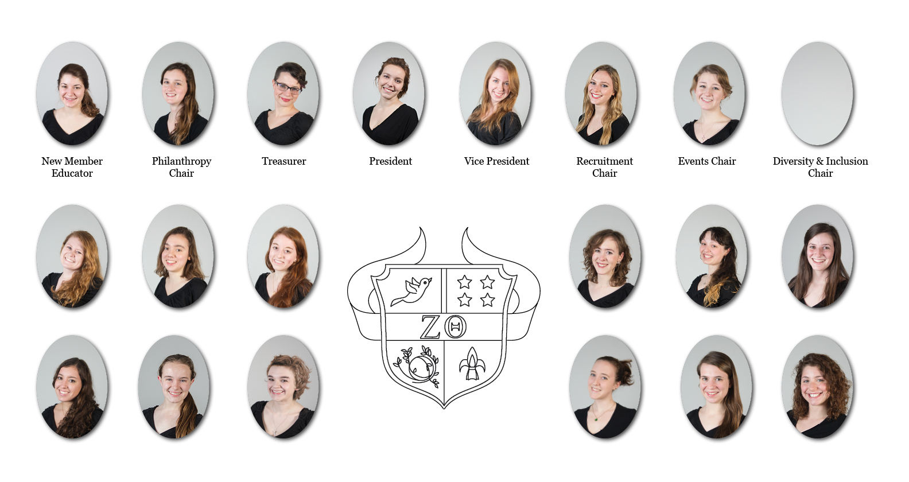
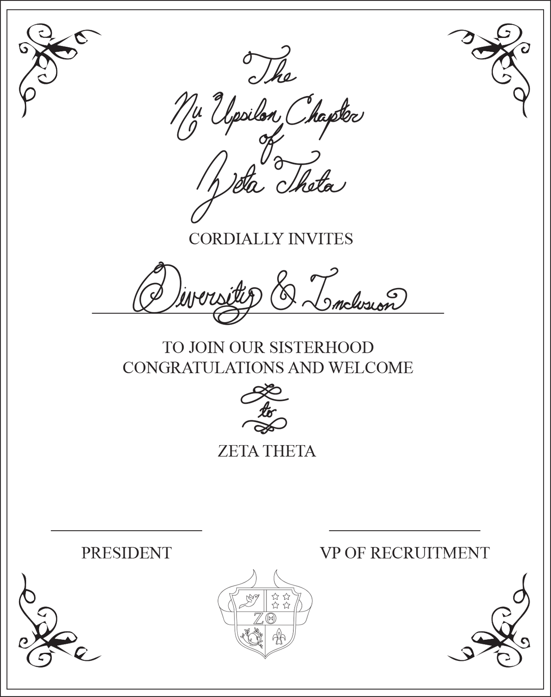

Changing Composition
Jail n’ Bail forced Northwestern’s Greek life to confront diversity and inclusion. What’s happened since then?
by Katherine Mirani
The backlash to Kappa Kappa Gamma and Zeta Beta Tau’s Jail N’ Bail philanthropy event was swift on social media and then in print. Scathing Facebook and Twitter responses appeared almost immediately. A “student collective” signed a letter to The Daily Northwestern calling out the event for showing the white privilege endemic in Northwestern’s Greek community.
“Though the intentions of these Greek organizations may have been playful, the symbolism and context of their actions deserve scrutiny,” the students wrote. The group included students from MIXED, Students for Justice in Palestine, Coalition of Colors, Pulse Magazine, Sustained Dialogue, MEChA de Northwestern, FMO, APAC and Northwestern University College Feminists.
ACRONYMS TO KNOW:
PHA: Panhellenic Association (12 chapters)
MGC: Multicultural Greek Council (9 chapters)
NPC: National Panhellic Council (6 chapters)
IFC: Interfraternity Council (17 chapters)
Eighteen girls had posed on Northwestern’s campus wearing orange jumpsuits. They made Kappa Kappa Gamma hand signs, their hands pointed in opposite directions with thumbs touching and the index and middle fingers of each hand pointed out. “Come to the rock [sic] on Halloween and donate any amount to bail your favorite people out of jail!” read the event description, explaining that Jail N’ Bail would benefit Reading is Fundamental, a literacy nonprofit for underserved children.
Many in the NU community found Jail N’ Bail offensive because members of a mostly white group of women pretended to be prisoners, imitating a system from which they are far removed. In the U.S., more than 2 million people are currently incarcerated, a disproportionate number of whom are people of color. According to the NAACP, 58 percent of prisoners in 2008 were black or Hispanic. The Kappa fundraiser seemed to be trivializing the plight of those affected by mass incarceration.
According to its website, Reading is Fundamental’s “highest priority is reaching underserved children from birth to age 8.” The student collective wrote in The Daily that the “decision to raise money for disadvantaged children by parodying the very system that oppresses these parents and families demonstrates the harm that can result from communities failing to take into account their own privilege,” pointing out that Department of Justice statistics show that black and Hispanic children are much more likely than white children to have an incarcerated parent.
Ajay Nadig
Weinberg sophomore
Wrote letter to The Daily Northwestern
To many people, the event came off as tone-deaf and painfully ignorant of the real issues Jail N’ Bail mocked. The “fact that a group of wealthy Northwestern students are ‘playacting’ at being prisoners (most of whom are poor) is a blatant belittling of the realities of mass incarceration and the prison-industrial complex,” wrote Ajay Nadig in a letter to the editor in The Daily.
Kappa and ZBT both released short statements apologizing for the event. “Kappa Kappa Gamma regrets organizing the Jail N’ Bail event due to its offensive nature,” the sorority said. “We expect our members to promote integrity, respect and regard for others at all times and we apologize to the NU community.”
Frances Fu
SESP senior
Former PHA President
Then-president of NU’s Panhellenic Association, Frances Fu, went further. The SESP senior wrote a personal statement about the event, apologizing while also asking for forgiveness. While Jail N’ Bail seemed to prove she hadn’t accomplished everything she’d wanted to when she began her term, writing an open letter was an opportunity to unite her activist experience with her PHA position.
“We didn’t want to issue a bullshit statement,” she says. “I felt like, I don’t know, as someone who has been on the activist side, on the side of marginalized communities before, that’s like the last thing that people want to hear.”
Fu’s letter was two pages long, released as a public Google Doc. “Our Greek community used someone else’s narrative to raise money for our philanthropy, and although we did not act out of malice, we should be ashamed of our ignorance,” she wrote. “Our goal is not simply to move on—to check things off on our ‘Diversity & Inclusion’ checklist to prove that we ‘get it’ now. Our goal is to change the culture of Greek life, the culture of Northwestern, the culture of the world.”
In the letter, Fu told readers about a new diversity and inclusion chair that would be implemented in each sorority.
Nadig read this letter. He says he hopes the sororities see the positions through and don’t decide that just announcing the new position is enough to enact change.
“I think the worst thing you can do is do the first round of back-patting after that,” he says.
Jail N’ Bail pushed Northwestern’s sororities into a tough conversation about diversity and inclusion. While the privilege of the Greek system has always been a topic of conversation on campus, this incident threw it into sharp relief.

CHANGEMAKERS
After the Jail N’ Bail outcry, the PHA began talking about how to prevent something similar from ever happening again. Fu met with Kappa, the Office of Fraternity and Sorority Life and Lesley-Ann Brown-Henderson, the executive director of the Department of Campus Inclusion and Community at Northwestern. Out of these conversations came the idea of the diversity and inclusion chair, though PHA is not allowed to force chapters to create new positions, meaning sororities do not have to adopt this new chair.
Michelle Lega
Weinberg senior
Former recruitment chair for Chi Omega
“I think it was a good suggestion. I’m not sure how effective it’s going to be,” said Michelle Lega, a member of Chi Omega and former recruitment chair. “For example, in my chapter we haven’t really heard much about that.”
Chi O chose a diversity and inclusion chair at the end of February, President Mattie Biggs wrote in an email.
Katherine Doyle
Medill junior
Incoming PHA President
Former VP of Public Relations for PHA
Incoming PHA President Katherine Doyle says even if chapters do not create a new position dedicated to diversity and inclusion, she thinks that each chapter will have a “point person” who will work on these issues. Some sororities must clear the creation of a new chair with their national organizations. Others may decide the duties of a diversity and inclusion chair would work better when folded into the duties of another position.
PHA also plans to slightly adjust the way philanthropy events are approved. At the time of Jail N’ Bail, PHA asked chapters to submit the dates of philanthropy events and a description of the events themselves through a Microsoft Word form attached to an email. Chapters were not required to submit public relations ideas or thoughts on how the event related to the charity it would benefit. This, Fu says, is how Kappa’s event fell through the cracks. While the sorority had been hosting Jail N’ Bail for years along with Kappa chapters around the nation, the Facebook photo, coupled with the disconnect from Reading is Fundamental’s mission to help underserved children, made the event especially offensive to many students. PHA never got a chance to see these potential pitfalls.
“A lot of times philanthropy is so separated from the original cause,” Fu says.
Doyle hopes to add a question on the philanthropy form asking, “How do you think this event will be perceived by the greater community?” A question like this, she says, will help each chapter pause and reflect on their event for a moment longer than usual, hopefully catching potentially offensive ideas.
“We don’t think that our chapters have any sort of negative intention,” she says. “I see my job as helping them clarify their good intentions and helping them prevent any unintended consequences.”
Doyle was the vice president of public relations for PHA before being elected president this past November. She performed her role in public relations through this winter’s recruitment, and was formally installed as president on Feb. 5. As the VP of PR during and after Jail N’ Bail, she says she constantly questioned what she could have done differently to stop what happened.
“I couldn’t help but wish that I had somehow anticipated a problem and helped them through that,” Doyle says. “Had I seen the Facebook PR beforehand? No. But could I have led better workshops, could I have had better conversations proactively about PR to avoid that ever happening? Maybe.”
When asked about the event now, Fu still tears up.
“It’s actually shocking right now that I’m still getting upset thinking about it and talking about it,” she says. As a self-proclaimed member of the “more activist side of Northwestern,” working with Students for Sensible Drug Policy and Sexual Health and Assault Peer Education before becoming president of the PHA, Fu had hoped to use her experiences and expertise to make changes within the Greek system.
“If I defend the Greek community, then that’s like betraying a part of myself,” she says, speaking of the process of writing her open letter. “But at the same time, as someone who’s trying to elevate the community and working with people who want to elevate the community, I couldn’t just be like, ‘Yeah this was wrong,’ and just kind of like ditch people who are trying to make things better. So that was really a struggle for me.”
Because rules for creating new positions differ for each sorority, the diversity and inclusion chair hasn’t taken off right away. Some chapters have already created and appointed members to the position, while others have yet to do so. PHA began discussing the position last quarter, but new sorority presidents began their terms this winter. Some, like Pi Beta Phi President Anya Ring, were therefore not present when PHA started these ideas.
Anya Ring
Weinberg sophomore
President of Pi Beta Phi
“There’s definitely a learning curve,” says Ring of the transition process.
Since taking office this quarter, Ring has engaged in talks about how to implement the position.
Delta Delta Delta, on the other hand, already has a diversity and inclusion chair. Tri-delt President Grace Lindner says Willow Pastard, the new chair, was perfect for the role and asked to take it on.
Grace Lindner
Communication junior
President of Delta Delta Delta
"She kind of has had this role in an unofficial sense in our chapter by making everyone aware of cool events on campus that maybe we wouldn’t attend, because we wouldn’t know that they’re happening,” Lindner says. “I think she just wanted to make it into more of an official position so that we could do more with it.”
Lindner says the position will be about making the chapter aware of diversity on campus and in Chicago by bringing in speakers, setting up events and more. For their first event, the sorority went to see Selma, the film about voting rights marches led by Martin Luther King, Jr. in 1965.
Tri-delt created the new position after getting it approved by their executive office, which Lindner says was an easy process.
“I think in terms of positions, it’s not that hard to get anything approved because it’s obviously all for the good of the chapter,” she says. “Why would they ever say no to a diversity chair?”
Caroline Hatch
Weinberg junior
President of Kappa Kappa Gamma
As for Kappa, President Caroline Hatch wrote in an email that she is “unable to speak at this time but Kappa Kappa Gamma is fully onboard with the Greek and larger Northwestern community’s plans regarding Diversity and Inclusion!”
Elizabeth Bailey, fraternity vice president for Kappa’s national organization, wrote in an email that “Kappa Kappa Gamma’s Upsilon Chapter has taken the suggestion by the Northwestern Panhellenic Association very seriously.” She wrote that Kappa members “have taken part in an Intent/Impact dialogue hosted by Northwestern University’s Assistant Director for Campus Inclusion and Community,” Michelle Enos.
General Members
While she discussed the issue with her Chi O sorority sisters, Lega says talking with fellow members of College Feminists convinced her to sign the letter to The Daily responding to Jail N’ Bail. She wanted to show that there are members of Greek life “who are trying to be more aware of these issues and trying to help others in Greek life be more aware as well.”
“I agreed with the criticism,” Lega says. “It was poorly thought out. I don’t want to necessarily demonize the whole chapter. I don’t want to demonize the women who put this event on, but at the same time, it required more forethought.”
Lega is passionate about the issue of diversity in Greek life and believes that she has developed a more diverse group of friends and has gotten more involved in social justice issues at Northwestern due to her membership in a sorority.
“I definitely am glad I joined a sorority. It opened me to so many new experiences,” she says. “I think I would have been a lot more enclosed or ignorant if I hadn’t, because so many people in my sorority are involved in so many things on campus. My friends before joining a sorority, we were kind of a homogenous group. We were all from the same income level. We were all white, so joining a sorority, interestingly, made my friend group more diverse.”
Still, she knows there’s work to be done. On one promising note, she hopes sexuality is not a reason people decline to join Greek life. Lega identifies as queer.
Weinberg freshman Tiffany Anderson is one of Lega’s newest Chi O sisters. She says that she was looking at the diversity of each chapter as she went through recruitment.
Tiffany Anderson
Weinberg freshman
New member of Chi Omega
“I was looking at how diverse are they, do they have a lot of different types of people in them,” says Anderson, who identifies as black. “That was a big factor for me. Because you don’t want to be the token minority in a sorority.”
According to a 2014 survey by the Division of Student Affairs, PHA and IFC at Northwestern are less than 2 percent black. Students who identify as Asian or Pacific Islander make up 10 percent of PHA and IFC, while 9 percent identify as Hispanic and 5 percent as two or more races. Lega says she’s noticed that the national Chi O Facebook page often posts pictures of all-white groups of women.
“It’s certainly our problem and our fault more than it is the people choosing to go through recruitment, choosing to join these chapters,” Lega says. “But it’s sort of like, I don’t know, displaying these pictures of all white chapters is just going to do more to dissuade women of color from going through the process."
Anderson says she is happy with Chi O and thinks it is a diverse group of people. “Everyone’s really nice,” she says. “I could see myself being best friends with these girls for four years, or even past that.”
The friendships in Greek life are what drove Weinberg sophomore Car Jansen to join Chi O as well. But that doesn’t stop Jansen, who identifies as queer, from wondering what Greek life could do to become less heteronormative.
Car Jansen
Weinberg sophomore
New member of Chi Omega
“I think that it’d be a good thing to have options for people who don’t fall inside the gender binary,” she says. “I don’t really know what the solution would be, but I do think it’s restrictive to only be like sororities for women, fraternities for males, that leave out people who maybe don’t identify as either of those.”
This issue occurred to Nadig as well, who says he doesn’t think Greek life can change while remaining Greek life as he conceives it.
“If they were to solve the problem, then they wouldn’t like be what I think to be Greek life anymore,” he says. “It would be a very different institution, which is not a bad thing.”
The institution of Greek life has changed to become more inclusive several times over the years, mostly in terms of race. While Northwestern’s first black fraternity, Kappa Alpha Psi, was founded in 1917, it was not recognized by IFC and the National Pan-Hellenic Council until 1941, according to the Office of Fraternity and Sorority Life. Black women didn’t pledge sororities until 1967. The first Latina- and Latino-based chapters came to Northwestern in 2000 and 2001, respectively, and the first Asian-interest sorority, Kappa Phi Lambda, was founded in 2003.
“I think it’s also important to realize you know, contextually at Northwestern, I think maybe three to five years ago, we weren’t even having conversations about diversity,” says Ben Wiebers, assistant director at the Office of Fraternity and Sorority Life. “It was something we knew existed, but we weren’t necessarily talking about it, and within the last couple of years, students have really taken a hold through social media and forums and talking about, ‘Hey, this is an issue that really matters.’”
Nadig, too, thinks issues of diversity have boiled to the surface in recent years more strongly than before.
“I think it was super easy to go about your day without talking about race issues like before Trayvon Martin,” he says. “Of course all these things were super present. They’re all like these awful things that happened. But I think as a wealthy college student you could very much go about your day and not think about it. But I think that really changed after the Trayvon Martin shooting. I think it really became, this is something you confront, wherever you go, all the time.”
Financial Inclusion
A discussion about diversity in Greek life isn’t complete without talking about financial inclusion. Chapter members must pay dues in order to support the organization, hold events and maintain a house on campus. Those dues can end up running too high, forcing people to choose between staying in a social group they love or going broke.
Kathy Hong
SESP senior
VP of Administration for PHA
PHA Vice President of Administration Kathy Hong is working on making sororities more financially inclusive. She made a financial matrix for this year’s recruitment that was handed out to potential new members, laying out the financial obligations for each chapter.
Even with Hong’s matrix in hand, however, potential new members are still the ones who must bring up financial issues with the women they talk to at each chapter, something some people may not feel comfortable doing. Hong agrees that there could be more transparency in the process, but says one of her main goals right now is to analyze PHA’s finances to see if more money could be given out in scholarships.
Lindner, who served as Tri-delt’s vice president of finance before becoming president, says their diversity and inclusion chair is interested in financial inclusion as well.
“That has been a conversation that we’ve opened up a little bit more this year because it is hard for some people to obviously pay, and sometimes it ends up being a choice of, ‘Do I stay in the chapter? Because I can’t really pay for this,’” she says. Tri-delt offers installment plans for paying dues, as well as national scholarships.
IFC President Mark Nelson summed up the difficulty of making changes to finance.
Mark Nelson
Weinberg junior
IFC President
“It’s so tough. The financial stuff, it just sucks so bad,” he says. “There’s got to be a more eloquent way to say it, but to find a way to fix that is so hard, because that’s just an inherent thing about being in a fraternity, you have to support it financially.”
Transparency and Relationships
PHA is working to improve awareness of diversity and inclusion at Northwestern, starting with the new chair positions. There are many women dedicated to working on it, such as Lega and her sisters. But the fact remains that Greek life is a hard institution to change. There are many organizations, each with their own rules and regulations, all working to please their own constituents who may not be in tandem with one another. Each sorority and fraternity chapter at NU has a national organization that oversees it. PHA reports to the National Panhellenic Conference. Then there’s IFC, the Multicultural Greek Council, NPHC and, of course, the Office of Fraternity and Sorority Life.
That’s a lot of councils, acronyms and administrations, a lot of people who may or may not be working toward the same goals. And when diversity and inclusion becomes a big issue, getting things done can be tough. Fu speaks of the “weird balance” among PHA, each Northwestern chapter and their national organizations. There’s also the issue of working with the Interfraternity Council, an organization with very different rules and regulations from PHA.
Another set of difficulties exists in making connections with the multicultural fraternities and sororities when there is an imbalance in resources and membership between PHA and IFC and the multicultural groups.
“We are all Greek, but like, we’re really different in a lot of ways, and a lot of people don’t understand the underlying systems that create conflict between people who are different,” Fu says.
Cindy Chen
McCormick junior
Former MGC President
Outgoing Multicultural Greek Council President Cindy Chen says that for her, IFC and PHA chapters reaching out to MGC chapters feels welcoming, though there’s no getting around the huge size difference among the councils. MGC, which includes groups of both genders, has about 100 members in total, Chen says. PHA and IFC together gave bids to 841 students in 2015.
“There’s nothing we can do to change the size, because the small, intimate community is part of who we are as MGC,” she says. “So what we can do is just to build those personal relationships.”
Chen says while relationships between council presidents start off strong at the beginning of presidents’ terms Winter Quarter, they tend to die as the year goes on. She blames this on the busy Northwestern schedule.
Nelson is full of optimism. He says he wants to meet with the other council presidents every two weeks to figure out how they can work together, though he’s not sure how those meetings will work.
There are difficulties in trying to navigate the differences between individual and national chapters and among the several Greek councils at NU, Doyle says. “We tell people to join Greek life because we’re not all the same person. So there’s no point in pretending to all have the same narrative.”
Doyle says it hurts her to hear sorority women say, “It’s different at Northwestern,” because she wants to see women at NU work with their national organizations to create change there. She wants Northwestern sororities to make more of an effort to make national Greek life progressive.
“First and foremost, you want to focus on making your individual chapter fabulous,” Doyle says. “But then, let’s push for more. Let’s start national conversations. Let’s be trendsetters.”
Fu also believes in the power of the women at Northwestern to make changes. She’s less sure about Greek life.
“I think I’m leaving my position not necessarily more passionate about Greek life. I think I’m jaded by Greek life, but I have become more passionate about women, and women’s empowerment,” she says. “PHA here has been pretty progressive in a lot of different ways, that the National Panhellenic Conference doesn’t necessarily even understand yet. That’s where I’m leaving my position.”